MailDev lite guide
The single-project edition that runs on its own inside a customer network (air-gap): one container, SQLite, local accounts, a pre-issued certificate. For whoever packages it at the vendor, installs it at the customer site and uses it day to day.
Updated 2026-10-29
1. What the lite edition is
The same product, packaged for sites without the company's infrastructure.
Many projects run inside an isolated customer network: no access to maildev.example.com, no Active Directory, no approval for PostgreSQL or OpenBao. MailDev lite is the slimmed-down MailDev for exactly those sites: the customer's applications send mail (SMTP or SendGrid / SES / Azure / Graph / Gmail style APIs) to MailDev lite, where it is captured and kept inside, never delivered outward unless relay is enabled and an owner approves each message.
One container
A Go binary with the web UI embedded, serving HTTPS itself. No Node.js, no external database.
SQLite
All state in the data/ folder. Backup = copy the folder.
Local accounts
No AD. The admin creates accounts; users must change their password at first login.
One project
Project default; every account is a member automatically, admins are owners.
10-year certificate
Issued from the vendor's OpenBao PKI at packaging time, or self-signed when absent.
Same as the full edition
SMTP/IMAP/POP3, provider APIs, Outlook, approved relay, S/MIME, audit log, retention, vi/en/ja UI.
| Full edition (maildev.example.com) | Lite edition | |
|---|---|---|
| Deployment | Kubernetes, 2 images | 1 container, docker compose |
| Database | External PostgreSQL | SQLite in data/ |
| Sign-in | Active Directory + external accounts | Local accounts only |
| Projects | Many, created by admins | One project default |
| Roles | admin / auditor / user; owner / member | Identical; local accounts may be owner, admin, auditor |
| Encryption at rest | OpenBao Transit per project | None (encrypt the disk) |
| TLS certificate | cert-manager (Let's Encrypt) | 10-year certificate from OpenBao PKI, or self-signed |
| Protocols and features | SMTP 25/587/465, IMAP 143/993, POP3 110/995, HTTPS 443, APIs, relay, S/MIME, audit | Identical |
2. Architecture and ports
browser ──443──► 8443 HTTPS (web UI + REST API) ┐
Outlook ──143/993─► 1143/1993 IMAP / IMAPS │ maildev-lite container
Outlook ──110/995─► 1110/1995 POP3 / POP3S │ (unprivileged user)
apps ──25/587/465► 1025/1587/1465 SMTP / STARTTLS / SMTPS ┘
/data/maildev.db /data/master.key (volume ./data)
/certs/tls.crt tls.key smime-ca.pem (volume ./certs, read-only)- The container runs as an unprivileged user and listens above port 1024;
docker-compose.ymlmaps the standard host ports onto it. The UI shows users the standard ports. data/holds the SQLite database and the master keymaster.key(encrypts project credentials and relay passwords). Backing up this folder is enough.- No outbound calls, no auto-update: suited to isolated networks.
| Service | Host port | Container port | Notes |
|---|---|---|---|
| Web UI, REST API, SendGrid/SES/Azure/Graph/Gmail APIs | 443 | 8443 | HTTPS. Plain HTTP on 8080 is also open for a reverse proxy / health checks. |
| SMTP | 25, 587, 465 | 1025, 1587, 1465 | AUTH PLAIN/LOGIN with the project credential is mandatory. |
| IMAP | 143, 993 | 1143, 1993 | One INBOX. |
| POP3 | 110, 995 | 1110, 1995 | Deleting in the client deletes from the project. |
3. Requirements at the customer site
- Linux x86-64 server (Ubuntu 22.04+, RHEL 8+ or equivalent), 2 CPU, 2 GB RAM, 20 GB disk.
- Docker Engine 24+ with the
docker composeplugin (or Podman 4+ with podman-compose). - An internal host name pointing at the server, e.g.
maildev.customer.local(internal DNS or hosts file). It must match the certificate. - Open inside the LAN: 443, 25/587/465, 143/993, 110/995. Nothing needs to face the Internet.
retention_days (default 14, max 180) and beyond max_emails (default 5000), so disk usage grows slowly.4. Packaging (vendor side)
On a machine with Internet access and access to the OpenBao PKI (pki-int, role tls-any).
git clone https://github.com/phongbui83/maildev.git cd maildev-lite make sync # (optional) pull the latest ../backend and ../frontend code export BAO_ADDR=https://vault.example.com BAO_TOKEN=<token> make package HOST=maildev.customer.local IP=10.20.30.40 # -> dist/maildev-lite-<version>-maildev.customer.local.tar.gz
The bundle contains the image (docker save), docker-compose.yml, a pre-filled .env, certs/ (10-year certificate + CA chain, ca.crt for user machines, smime-ca.pem for S/MIME verification), install.sh and the documentation.
- Image only:
make image. Certificate only intocerts/:make cert HOST=... IP=.... - Local trial without a certificate:
make web build && ./dist/maildev-lite, then open https://localhost:8443 (self-signed, admin/admin). - Automated tests:
make testruns the full edition's suites against the lite binary plus the lite-specific checks.
5. Installation at the customer
- Copy the bundle to the server (USB, SCP…) and extract it:
tar xzf maildev-lite-<version>-<host>.tar.gz. - Review
.env(host name, initial admin account if you want to change it). - Run
./install.sh(=docker load+docker compose up -d). - Check:
docker compose ps,docker compose logs -f maildev(lines https listening, smtp listening),curl -k https://<host>/readyz→ready. - Install
certs/ca.crtinto the trust store of user machines (Windows: Trusted Root Certification Authorities) so browsers and Outlook do not warn.
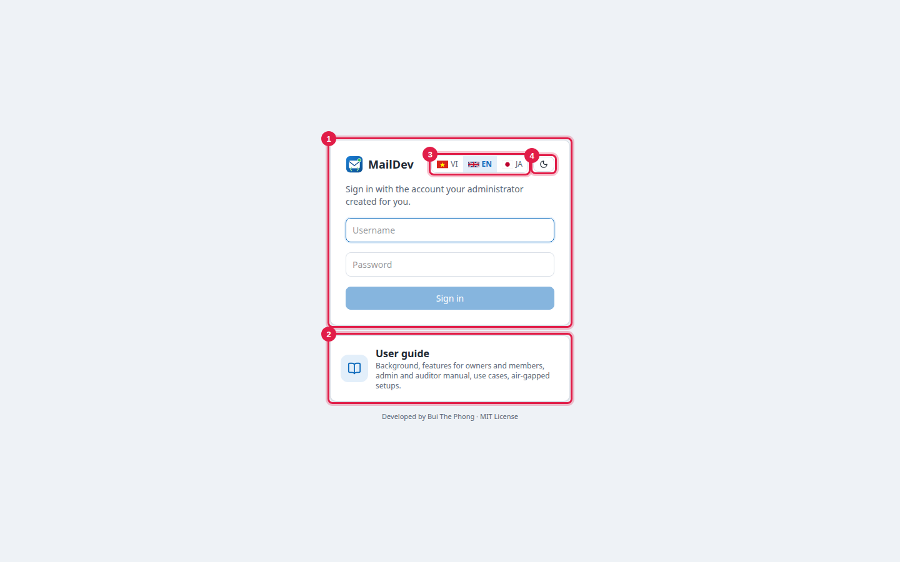
Sign in the first time as admin / admin (or the MAILDEV_LITE_ADMIN_USER/PASSWORD values in .env). A password change is enforced immediately: at least 12 characters with upper case, lower case and a digit. Every account the admin creates later must change its password at first login too.
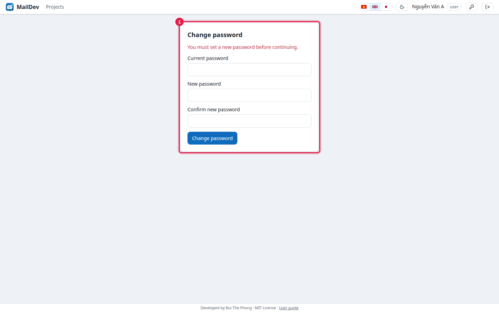
6. .env settings
| Variable | Default | Meaning |
|---|---|---|
MAILDEV_HOSTNAME | maildev.local | Host name users connect to; shown under Development info; used for the self-signed certificate. |
MAILDEV_PUBLIC_URL | https://<hostname> | Web URL used in the API examples. |
MAILDEV_LITE_ADMIN_USER / _PASSWORD | admin / admin | First admin account, created only when no admin exists. |
MAILDEV_LITE_PROJECT_NAME | Default | Display name of the single project (slug fixed to default). |
MAILDEV_MAX_MESSAGE_BYTES | 26214400 | Message size limit (25 MB). |
MAILDEV_SESSION_TTL | 12h | Web session lifetime. |
MAILDEV_HTTP_ADDR | :8080 | Plain HTTP for a reverse proxy / health checks; empty disables it. |
MAILDEV_HTTPS_ADDR | :8443 | HTTPS; empty when a TLS reverse proxy is in front. |
MAILDEV_COOKIE_SECURE | true | Set false only when the UI is reached over plain HTTP. |
MAILDEV_MASTER_KEY | generated into data/master.key | Master key (base64, 32 bytes) encrypting credentials and relay passwords. |
MAILDEV_SMIME_CA_FILE | /certs/smime-ca.pem when present | Trust anchors for S/MIME signature verification. |
Every MAILDEV_* variable of the full edition is accepted, e.g. MAILDEV_AUTH_MODE=ldap with MAILDEV_LDAP_* when the site has its own AD.
7. Day-to-day use
Home
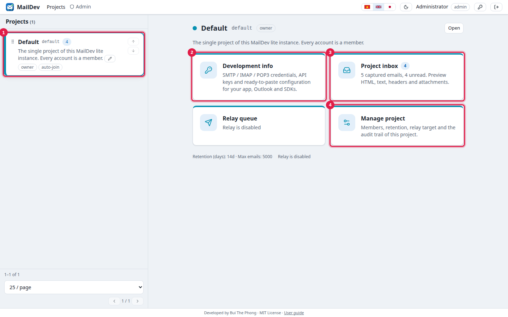
Development info: connecting applications
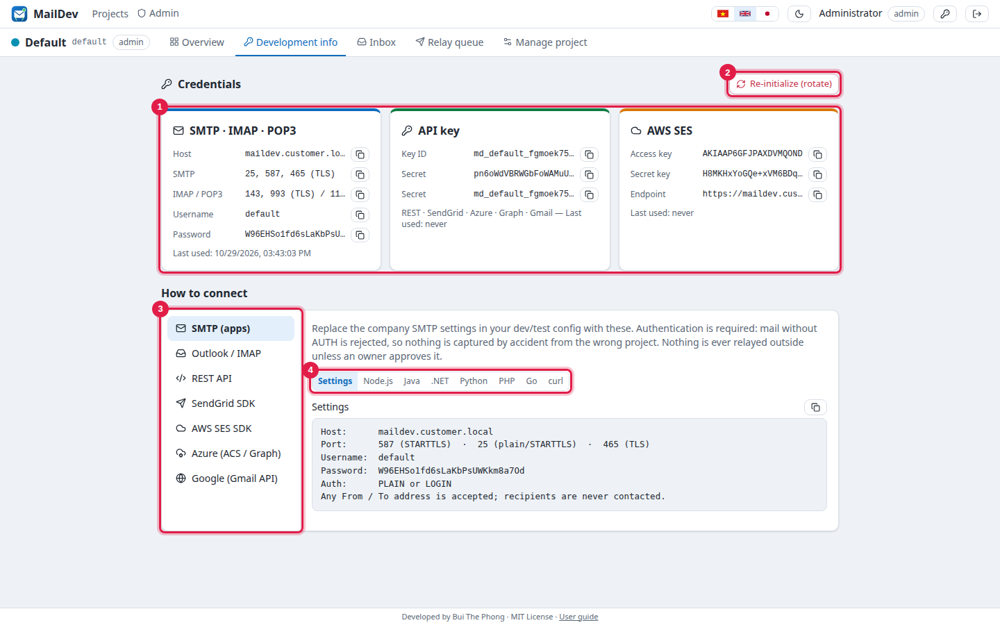
default), API key, AWS SES style keys · 2 Re-initialize all credentials · 3 Provider · 4 Language of the sample codeApplications only change host and credentials and keep their SDK: SMTP (nodemailer, Spring, Laravel, Django, .NET, Go, Java), SendGrid (https://<host>/sendgrid), AWS SES v1/v2 (https://<host>/ses), Azure Communication Services (endpoint=https://<host>/azure/<key id>;accesskey=…), Microsoft Graph (https://<host>/graph/<key id>/v1.0), Gmail API (https://<host>/gmail/<key id>), generic REST POST /api/v1/send.
Host: maildev.customer.local Port: 587 (STARTTLS) or 25 / 465 Username: default Password: <the project's SMTP password>
Outlook / Thunderbird
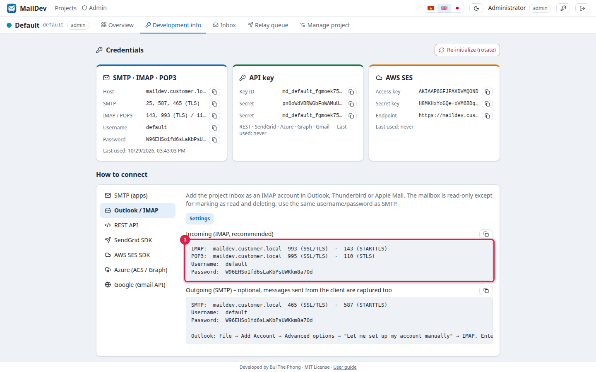
- Outlook: File → Add Account → Advanced options → “Let me set up my account manually” → IMAP.
- Email address: any label, e.g.
default@maildev.customer.local. - Incoming: <host>, 993, SSL/TLS. Outgoing: <host>, 465 SSL/TLS (or 587 STARTTLS).
- Username/password: the project's SMTP credential.
ca.crtmust be installed to avoid certificate warnings.
Inbox
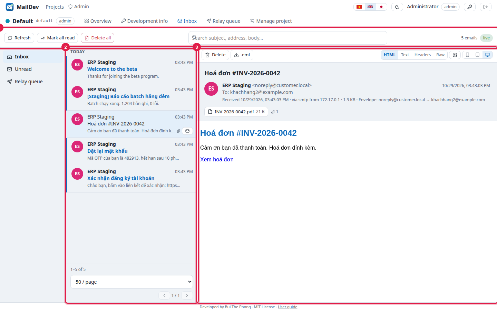
- Search by subject, address or body. ↑/↓ keys move between messages.
- Remote images are blocked by default; click the image icon to load them.
- New mail appears instantly (the 'live' badge). S/MIME-signed mail shows its verification status against
smime-ca.pem. - Members read, search, delete and mark as read; owners additionally manage the project.
8. Administration
Accounts
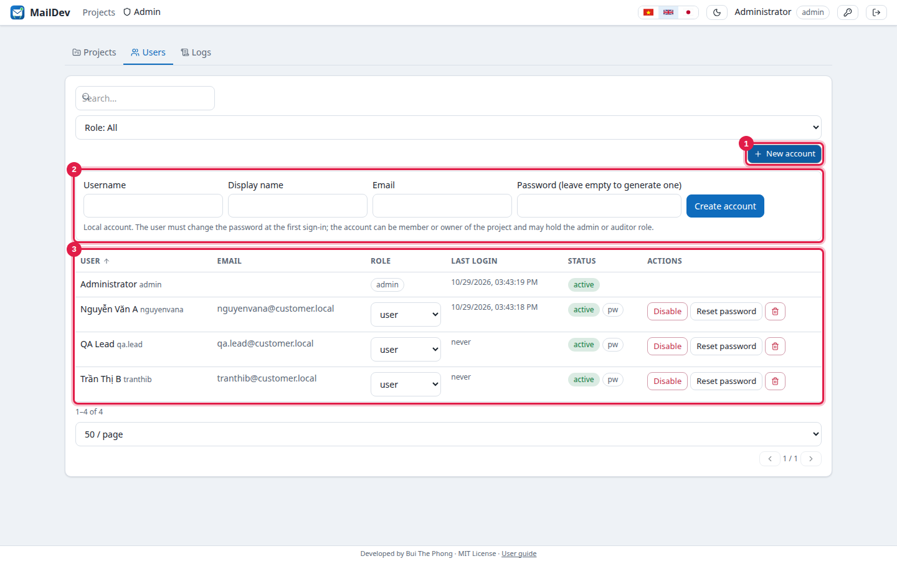
| Global role | Rights |
|---|---|
| admin | Everything: create accounts, set roles, project settings, relay target, the whole audit log. Automatically owner of the project. |
| auditor | Read-only: inbox, members, system-wide log. Changes nothing. |
| user | Default. Member of the project automatically; an owner can promote to owner. |
- Every new account must change its password at the first sign-in (the
pwbadge in the list). - Reset password generates a temporary password shown once. Disable ends all sessions. Unlock after too many wrong passwords.
- Lost admin password: on the server run
docker compose run --rm maildev reset-admin admin; it prints a temporary password.
Members and owners
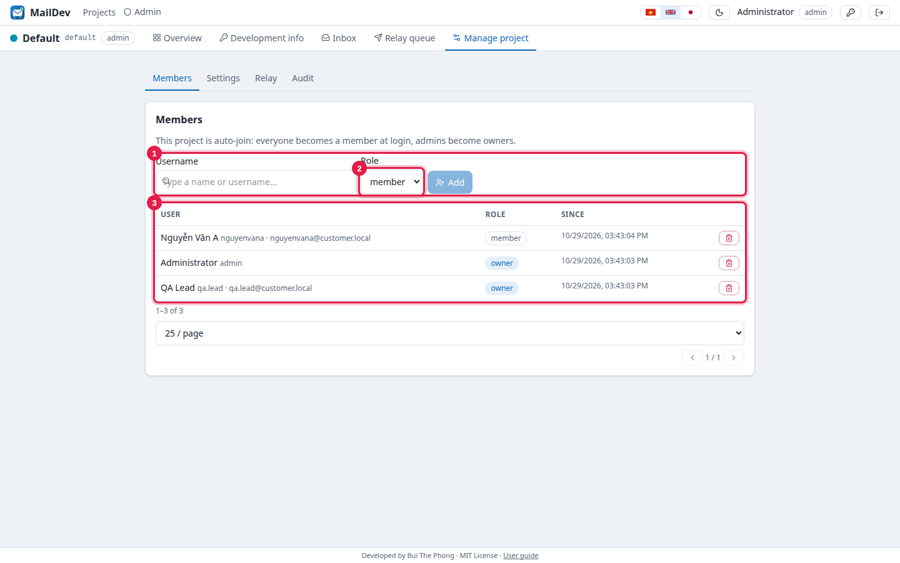
Owners (PM, QA lead) manage members, re-initialize credentials, edit the description, approve relay and read the project log. A project may have several owners.
Project settings
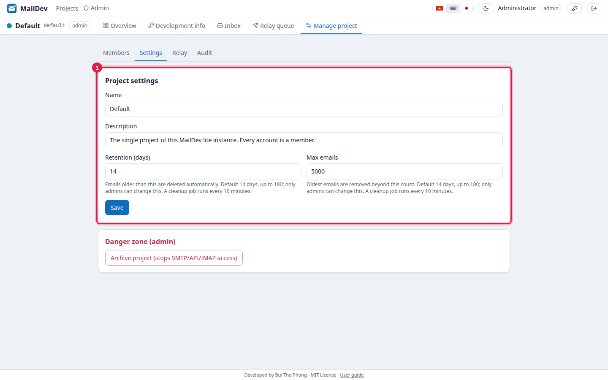
retention_cleanup.Relay (optional, off by default)
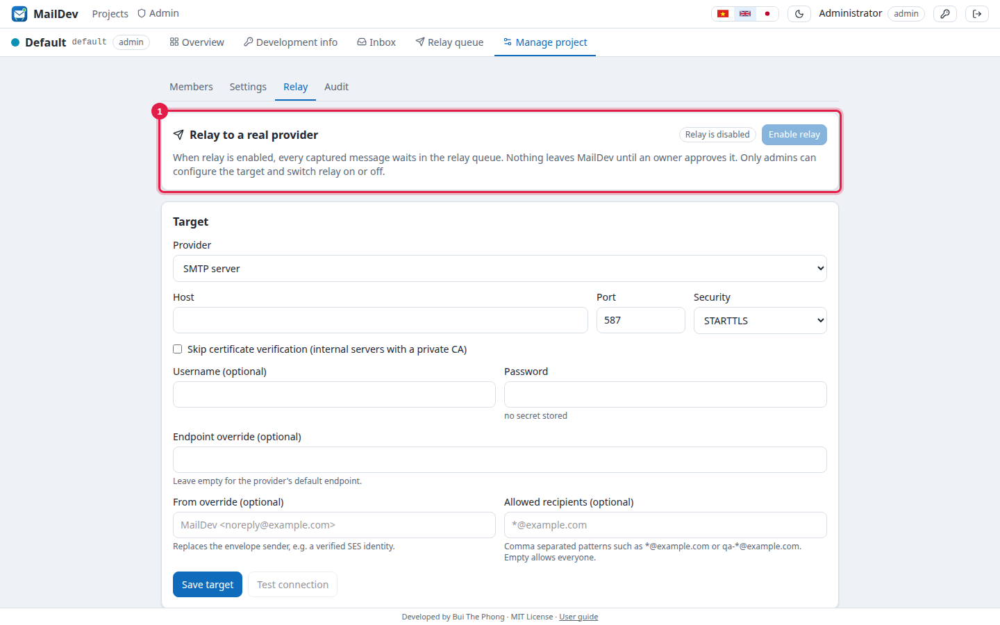
- Admin: Project management → Relay → choose the target, save, Test connection, Enable relay.
- Owner: Relay queue → select one or more messages → Approve (deliver) or Reject, with a note.
- Recipients outside the allow-list are blocked. Every decision is logged (
relay_approve,relay_sent,relay_reject…).
Project and logs
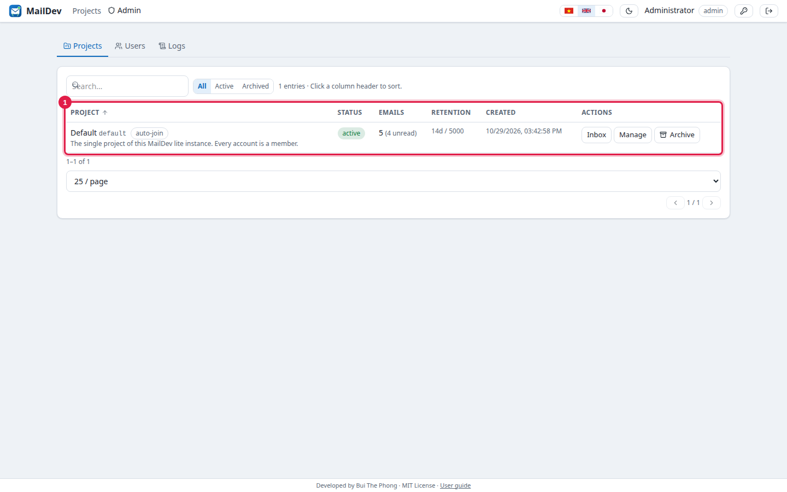
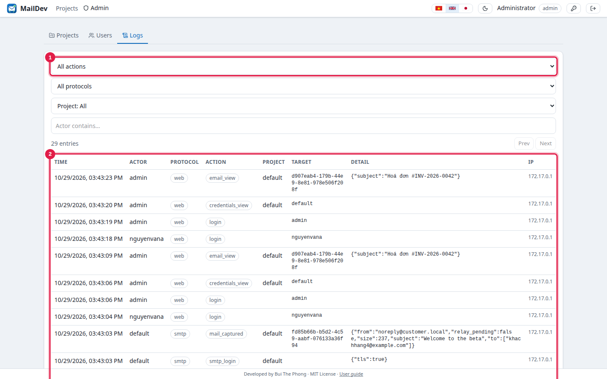
9. Backup, restore, upgrade
# backup (stop for a consistent file) docker compose stop tar czf maildev-backup-$(date +%F).tgz data certs .env docker compose start # restore on a new host: extract the bundle, copy data/ and certs/ over it, ./install.sh # upgrade: receive a new bundle from the vendor docker load < maildev-lite-image-<new>.tar.gz sed -i 's/^MAILDEV_IMAGE=.*/MAILDEV_IMAGE=docker.example.com\/maildev\/lite:<new>/' .env docker compose up -d # the SQLite schema upgrades itself at start
data/master.key belongs with data/maildev.db. Without the key stored credentials cannot be read: re-initialize the project credentials and update the applications.- The certificate lasts 10 years; renew by issuing a new one at the vendor (
make cert), replacingcerts/and runningdocker compose restart. - Never run two containers on the same
data/folder. - Encrypt the server disk: mail is stored in clear inside SQLite.
10. Troubleshooting
| Symptom | Fix |
|---|---|
bind: address already in use | Port 25/143/443… is held by another service (Postfix, Dovecot, nginx). Stop it or change the port mapping in docker-compose.yml and MAILDEV_PUBLIC_*_PORTS. |
| Browser / Outlook warns about the certificate | Install certs/ca.crt; check the host name matches the certificate: openssl x509 -in certs/tls.crt -noout -subject -ext subjectAltName. |
| Lost admin password / locked out | docker compose run --rm maildev reset-admin admin → temporary password, change enforced at sign-in. |
| Signing in returns to the login page | The UI is reached over plain HTTP while MAILDEV_COOKIE_SECURE=true. Use HTTPS or set false behind an HTTP reverse proxy. |
Application gets 530 Authentication required | SMTP must authenticate with the project's username/password (Development info). Recipient addresses do not matter. |
535 Authentication credentials invalid | Credentials were re-initialized or the project is archived. Fetch them again under Development info. |
| Mail not visible in Outlook | Outlook must be set up as IMAP/POP3 (not Exchange); check ports 993/995 and the project's SMTP credential. |
database is locked in the log | Slow/full disk or another process holding maildev.db. |
Application log: docker compose logs --tail=200 maildev (JSON, one mail captured line per message). Contact, buithephong@gmail.com.